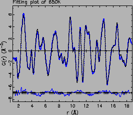
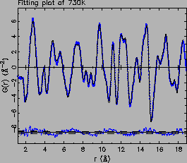
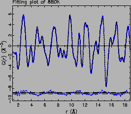
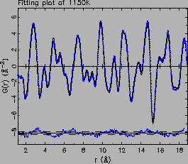
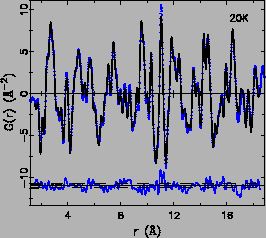
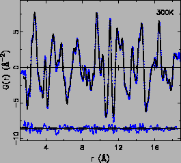
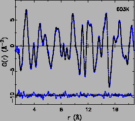
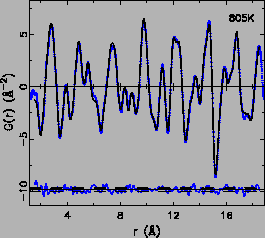
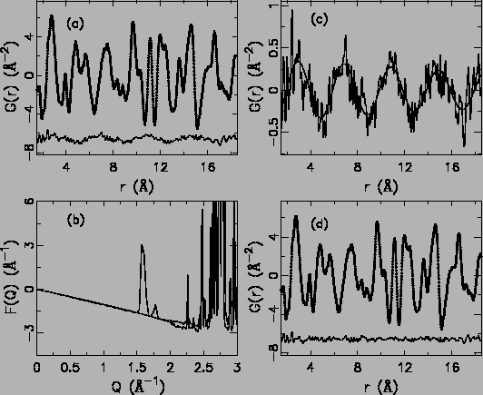

Figure:
(upleft) The PDFFIT refinement results
of sample LaMnO3(A) data at 650 K, (upright) 730 K, (downleft)
880 K, (downright) 1150 K. Denotations are the following, the
experimental G(r) is shown as solid dots, and the calculated PDF
from refined structural model is shown as solid line. The
difference curve is shown offset below. The dashed lines show the
estimated standard deviations due to finite counting statistics at
2 level.
level.
|



 |
PDFFIT [11], a real space non-linear least square
regression refinement program, was used to fit structural models to
all experimental PDFs. The real space distance r range of the
experimental PDF used is 1.5 to 20.0 Å 3.3. The initial structure
model for the orthorhombic phase has space group Pbnm, with
asymmetric cell made up of La (-0.0078, 0.049, 0.25), Mn (0.00, 0.50,
0.00), O1 (0.075, 0.49, 0.25), O2 (0.73, 0.31, 0.04). The high
temperature rhombohedral R phase has space group
R c
with its asymmetric cell comprising of La (0.0, 0.0, 0.25), Mn (0.00,
0.00, 0.00), O (0.44, 0.0, 0.25). Necessary constraints are properly
set up manually to maintain the Pbnm or
Rc space group
symmetry. This also means that special atomic positions are not
refined. It is noteworthy that constraints can be set based on the
atomic environments regardless of the space group, as PDFFIT assumes
no inherent symmetry of the refined structure. Refined structure
parameters include lattice constants, non-special atomic fractional
coordinates, and isotropic thermal displacement
parameters. Additionally, finite instrument resolution factor is
modeled as the Qsig, the full width at half maximum (FWHM) of the
instrumental resolution function; the renormalization factor (scale
factor) is also refined to account for small but non-negligible
systematic errors during data analysis. All refinement agreements are
rather good with Rwp values less than 0.10. Examples of the PDF
refinement are shown in Fig. 3.12
and 3.13 for sample LaMnO3(A) and (B), respectively.
c
with its asymmetric cell comprising of La (0.0, 0.0, 0.25), Mn (0.00,
0.00, 0.00), O (0.44, 0.0, 0.25). Necessary constraints are properly
set up manually to maintain the Pbnm or
Rc space group
symmetry. This also means that special atomic positions are not
refined. It is noteworthy that constraints can be set based on the
atomic environments regardless of the space group, as PDFFIT assumes
no inherent symmetry of the refined structure. Refined structure
parameters include lattice constants, non-special atomic fractional
coordinates, and isotropic thermal displacement
parameters. Additionally, finite instrument resolution factor is
modeled as the Qsig, the full width at half maximum (FWHM) of the
instrumental resolution function; the renormalization factor (scale
factor) is also refined to account for small but non-negligible
systematic errors during data analysis. All refinement agreements are
rather good with Rwp values less than 0.10. Examples of the PDF
refinement are shown in Fig. 3.12
and 3.13 for sample LaMnO3(A) and (B), respectively.
Figure:
Examples of PDF refinement results at
20 K, 300 K, 603 K, 805 K of sample LaMnO3(B). Denotations are the
following, the experimental G(r) is shown as solid dots, and the
calculated PDF from refined structural model is shown as solid
line. The difference curve is shown offset below. The dashed
lines show the estimated standard deviations due to finite counting
statistics at 2 level.
|



 |
In the difference curves shown in Fig. 3.12, sine
wave like fluctuations are somehow apparent. A clearer plot is shown
in Fig. 3.14(a). This is found to originate from
the missing low Q Bragg peaks in F(Q), which was directly sine
Fourier transformed to obtain the G(r). From
Fig. 3.14(b), three peaks (first one is a doublet)
are missing from the experimental F(Q) with positions at 1.57, 1.61,
and 1.77 Å-1. With the known peak positions and the relative peak
intensities estimated from the structure factors, the analytical
formula of
s*exp(0.018r)2 . (200 sin(1.57r) . 1.57 + 83 sin(1.61r) . 1.61 + 38 sin(1.77r) . 1.77) was fit to
the difference curve. r is the real space distance. s is the scale
factor as the only fitting parameter. The fit is shown in
Fig. 3.14(c). The excellent agreement of the fit
strongly indicates the missing Bragg peaks are the origin of the
fluctuations in the difference curves. Subtraction of the fitted sine
waves resulted in a much improved refinement as expected, which can be
seen in Fig. 3.14(d).
Figure:
Demonstration of the consequence of missing Bragg peaks
at low Q region of the experimental F(Q) on later PDF refinement
(see text for details).
|
 |
Xiangyun Qiu
2005-02-18